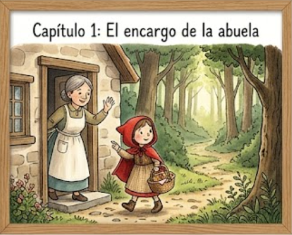

Capítulo 1: El encargo de la abuela
Había una vez una dulce niña que quería mucho a su abuela. Su madre le había hecho una caperucita roja y ella la llevaba tanto tiempo que todos la llamaban Caperucita Roja. Un día, su madre le dijo: "Caperucita, tu abuela está un poco enferma. Por favor, llévale esta cesta con pasteles y un tarrito de miel, pero ten mucho cuidado en el camino".
La niña, muy ilusionada, prometió que tendría cuidado y se puso en camino. La casa de la abuela estaba al otro lado del espeso bosque, un lugar lleno de árboles altos y sombras misteriosas, pero Caperucita estaba tan concentrada en su misión que apenas sintió miedo al adentrarse en la espesura.
